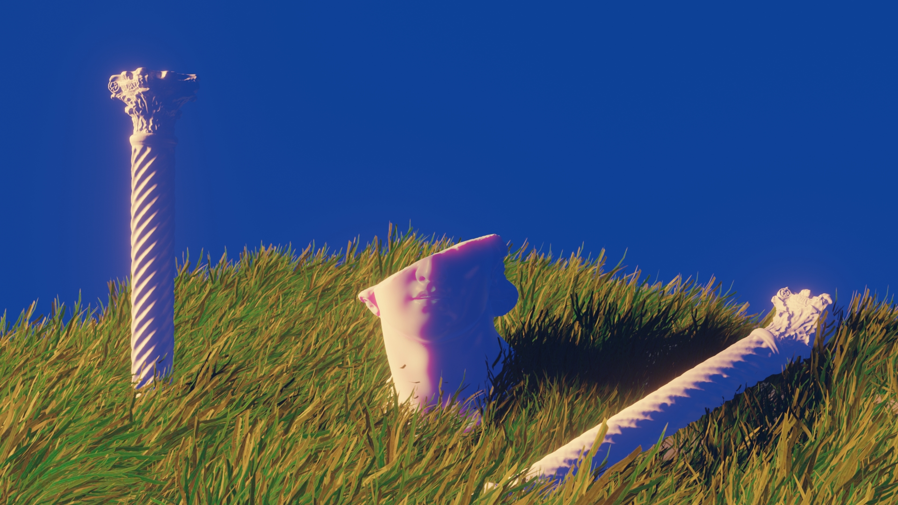

.gif)
Here you can find all my work in blender. I use blender to experiment with composition, lighting and procedural work. You can find a description of the process and thought that goes behind creating each render. Enjoy

This is my first blender render. It is quite simplistic but I did spend a lot of time refining each the light. Here I used a three point lighting that is common in cinema but applied here. The model is a low poly version of The Thinker statue. There is still no texture work in this render as I was at the beginning of learning how to use Blender.

This render is part of the second batch of renders I created using volumetric shaders. The lighting is simpler than the previous render but this is due to the fact that volumetric objects are much more computationally intensive. Volumetric objects scatter light in a similar way to smoke or clouds. Here I placed a heart in a low density volumetric cylinder to create an underwater look. This image took almost 2 hours to render due to how Blender uses physically accurate rendering.

After using volumetric shader, I decided to try object physics. Here I created an array of cubes with each cube having physics. Then I arranged the scene to drop and apply gravity. Thus, all the animation here is driven by physics. Because of the fact that the physics are baked once simulated, I can change the color of the blocks depending on where they land, as you can see by only the red blocks remaining.

Following my work with the animation system in Blender, I decided to use procedural “magic texture” and animate it over a polyhedron. With some colored lighting and some texture and shader work I created this render.

After trying out procedural textures, I wanted to try using particle systems. In this case, one blade of grass is assigned to a point on the surface, thus creating a grassy looking surface. THere were many challenges such as getting the grass to look somewhat real. Not only that but each blade of grass is individually rendered, so in the end the scene had over 6000 objects. I quickly learned the value of optimisation particle systems. This render is still one of my favorites
.png)
In this render, I combined many of the things i previously learned. The grass here is much better optimised and so decreases render time drastically. Not only that but the trees and rocks are all procedurally generated thanks to some powerful addons and the blender particle system. The background mountains are also generated using a procedural texture in blender.
I still have so many more things to learn in Blender such as post-processing, modeling, custom texture,etcs but I has allowed me to experiment in areas I enjoy.